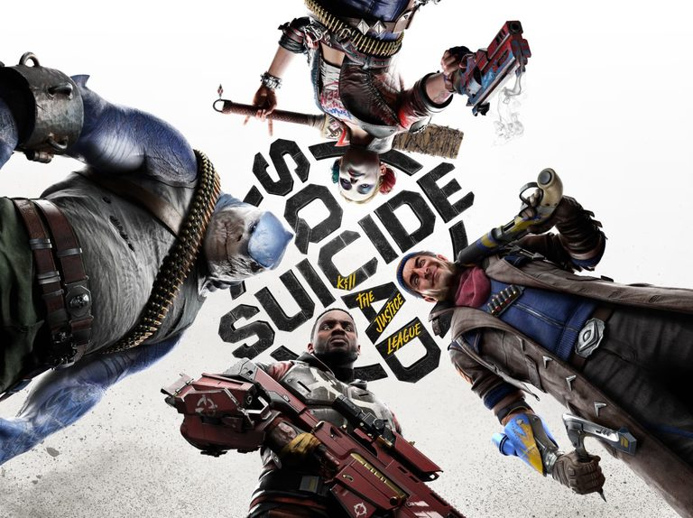
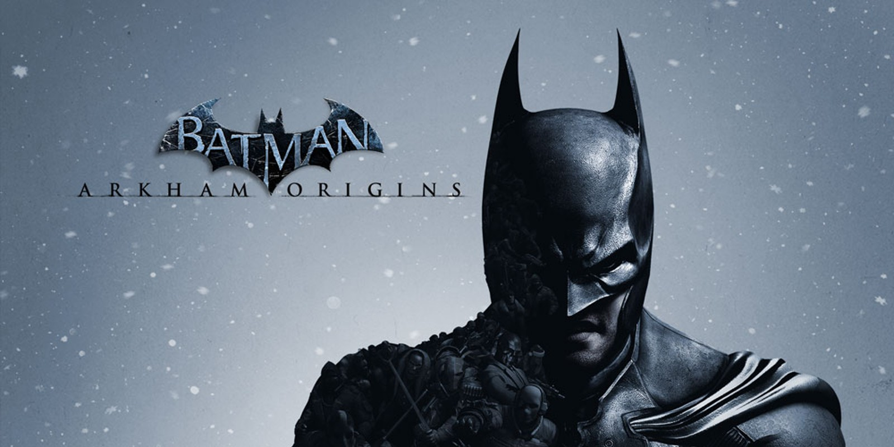
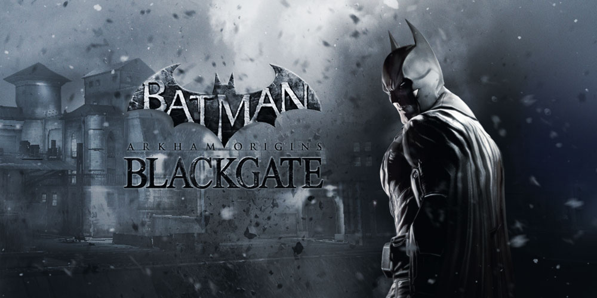
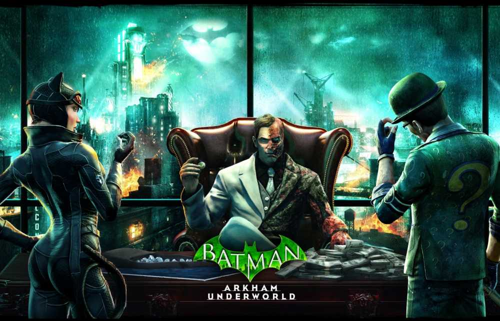

Latest Release

Suicide Squad: Kill The Justice League (2024)
"Suicide Squad: Kill The Justice League" is a video game developed by Rocksteady Studios. In this game, players control members of the Suicide Squad, including Harley Quinn, Deadshot, Captain Boomerang, and King Shark, as they take on the task of eliminating the Justice League, who have been corrupted by Brainiac. Suicide Squad: Kill the Justice League features an original, narrative-driven experience that picks up the story five years after the events of Batman: Arkham Knight. Players who are familiar with the Batman: Arkham series will see some related narrative elements pop up in the game.
Buy Now on SteamArkham Series

Batman Arkham Asylum (2009)
Batman Arkham Asylum is an action-adventure video game that takes players into the dark and twisted world of Gotham City's infamous psychiatric hospital. As the iconic superhero Batman, players must navigate the treacherous halls of Arkham Asylum, battling against a host of notorious villains and uncovering a sinister plot. With its immersive gameplay, gripping storyline, and stunning graphics, Batman Arkham Asylum offers an unparalleled gaming experience for fans of the Caped Crusader.
Buy Now on SteamBatman Arkham City (2011)
Batman Arkham City, players are once again thrust into the gritty and atmospheric world of Gotham City. As the Dark Knight, you must navigate the sprawling open-world environment, filled with iconic locations and dangerous criminals. With an arsenal of gadgets and combat skills at your disposal, you'll engage in intense hand-to-hand combat and stealthy maneuvers to take down enemies and unravel a complex and thrilling storyline. Immerse yourself in the dark and immersive world of Batman as you fight to save Gotham City from its darkest hour.
Buy Now on Steam img
Batman Arkham City Lockdown (2011)
"Batman: Arkham City Lockdown" is a mobile fighting game released in 2011. Developed by NetherRealm Studios and published by Warner Bros. Interactive Entertainment, it is a spin-off of the popular "Batman: Arkham City" game. In the game, players assume the role of Batman and engage in one-on-one battles against escaped villains and henchmen in the gritty streets of Gotham City. With intuitive touchscreen controls, players can experience the thrill of combat and navigate the iconic cityscape as the Dark Knight.
Not Available

Batman Arkham Origins (2013)
Batman Arkham Origins is an action-adventure video game set in the Batman universe. The game takes place on Christmas Eve, where a younger and less experienced Batman finds himself targeted by eight deadly assassins. As Batman investigates the origins of this deadly plot, he uncovers a conspiracy that threatens to unravel Gotham City. With his combat skills, detective abilities, and an arsenal of gadgets, Batman must navigate the dangerous streets of Gotham to uncover the truth and bring justice to the city he has sworn to protect. The game offers an immersive storyline, intense gameplay, and iconic characters from the Batman universe, making it a must-play for fans of the Dark Knight.
Buy Now on Steam

Batman Arkham Origins Blackgate (2013)
Batman: Arkham Origins Blackgate is a side-scrolling action-adventure game released in 2013. Developed by Armature Studio and published by Warner Bros. Interactive Entertainment, it serves as a companion and sequel to Batman: Arkham Origins. Set three months after the events of the main game, players can explore new maps, face new enemies, and uncover more of Batman's past.
Buy Now on Steam
Batman Arkham Knight (2015)
Batman Arkham Knight is an action-adventure video game set in the iconic Batman universe. The game takes place in Gotham City, which is under threat from the enigmatic Arkham Knight and his army of mercenaries. As Batman, players must navigate the city, solve puzzles, and engage in intense combat to uncover the Arkham Knight's true identity and stop his nefarious plans. Along the way, Batman encounters familiar allies and enemies, including the Joker, Catwoman, and Scarecrow. With its immersive gameplay, gripping storyline, and stunning visuals, "Batman: Arkham Knight" offers players an unforgettable gaming experience in the dark and dangerous world of Gotham City.
Buy Now on Steam

Batman Arkham Underworld (2016)
Batman: Arkham Underworld is a mobile game developed by Turbine, Inc. for iOS and Android platforms. In this game, players assume the role of a criminal mastermind with the goal of dominating Gotham City. By recruiting iconic DC Comics super-villains like The Riddler, Harley Quinn, and Killer Croc, players build their criminal empire. They must train an army of thugs, engage in battles, expand their operations, and defeat rival gangs to accumulate loot and gain respect.
Not AvailableBatman Arkham VR (2016)
"Batman: Arkham VR" is an action-adventure game released in 2016 that allows players to experience the role of Batman through virtual reality. Developed by Rocksteady Studios and published by Warner Bros. Interactive Entertainment, the game takes players to Gotham City as the Dark Knight, where they must solve mysteries and navigate through a virtual world as Batman. The game has received critical acclaim and has been praised for its immersive gameplay and innovative use of virtual reality technology. It offers a unique and immersive perspective on the iconic character of Batman.
Buy Now on SteamSuicide Squad: Kill The Justice League (2024)
"Suicide Squad: Kill The Justice League" is a video game developed by Rocksteady Studios. In this game, players control members of the Suicide Squad, including Harley Quinn, Deadshot, Captain Boomerang, and King Shark, as they take on the task of eliminating the Justice League, who have been corrupted by Brainiac. Suicide Squad: Kill the Justice League features an original, narrative-driven experience that picks up the story five years after the events of Batman: Arkham Knight. Players who are familiar with the Batman: Arkham series will see some related narrative elements pop up in the game.
Buy Now on SteamLego Series
Lego Batman: The Videogame (2008)
"Lego Batman: The Video Game" is an action-adventure game that brings the iconic Batman universe to life in a playful and imaginative way. In this game, players take on the roles of Batman and his sidekick Robin as they fight against the notorious villains of Gotham City.
Buy Now on Steam
Lego Batman 2: DC Super Heroes (2012)
Lego Batman 2: DC Super Heroes is an action-adventure video game that combines the beloved Lego building blocks with the iconic DC Comics characters. The game follows Batman and his allies as they team up with other superheroes from the DC universe to save Gotham City from the notorious villains Lex Luthor and The Joker.
Buy Now on SteamLego Batman 3: Beyond Gotham (2014)
Lego Batman 3: Beyond Gotham is an action-adventure video game that takes place in the Lego universe. The game follows Batman and his allies as they embark on a mission to save Earth from the evil Brainiac, who plans to shrink the entire planet and add it to his collection of miniature cities. To stop Brainiac, Batman must team up with other superheroes and villains from the DC Comics universe and travel to different planets, including iconic locations like Gotham City, Metropolis, and even the Lantern Worlds.
Buy Now on SteamOthers

Batman Telltale Series (2016)
The Batman Telltale Series is a 2016 episodic graphic adventure game developed and published by Telltale Games. It allows players to step into the shoes of Bruce Wayne and make choices that shape his journey as Batman. Set in the early stages of Batman's crime-fighting career, the game offers a gritty and violent narrative where players' decisions have far-reaching consequences for both Bruce Wayne and the corrupt city of Gotham. With its immersive storytelling and impactful decision-making, the game provides a unique and captivating experience for fans of the Batman universe.
Buy Now on SteamThe Dark Knight Rises (2012)
"The Dark Knight Rises" is a game released in 2012 that serves as the video game adaptation of Christopher Nolan's Batman movie trilogy's final installment. Players have the opportunity to embody both Batman and Catwoman as they navigate an open-world Gotham City, protecting it from the likes of Bane and other villains. With a blend of action, missions, and exploration, players can engage in various quests, encounter random events, and fully immerse themselves in the captivating world of Gotham City. While there may be some minor setbacks in terms of camera and controls, the game offers an impressive and enjoyable experience for fans of the movie trilogy.
Not AvailableBatman Begins (2005)
The game "Batman Begins" released in 2005 is an action-adventure game that takes inspiration from the movie of the same name. Developed by Eurocom and published by Electronic Arts, it allows players to assume the role of Batman during his early days as a crime-fighter. The game features a mix of stealth and combat mechanics as players navigate through Gotham City, taking on various villains from Batman's rogues' gallery.
Not AvailableThe Batman: The Enemy Within (2017)
"The Batman: The Enemy Within (2017)" is an episodic graphic adventure game developed by Telltale Games. It serves as a sequel to "Batman: The Telltale Series" and is based on the DC Comics character Batman. Players assume the role of Batman as he confronts a relentless federal agent and the emerging Joker. The game offers players the ability to make choices that shape the outcome of the story, with both Bruce Wayne and Batman facing challenging decisions that impact the city of Gotham. Released on various platforms in 2017, the game received positive reviews for its narrative-driven gameplay and player agency.
Buy Now on Steam
Batman Beyond (2000)
The game "Batman Beyond: Return of the Joker,"" is an action-packed beat 'em up video game developed by Kemco and published by Ubi Soft. Set in the future, players assume the role of Terry McGinnis, the new Batman, as they confront the return of the Joker. With its 3D graphics and gameplay inspired by the beloved Batman animated series, the game offers an immersive superhero experience.
Not AvailableBatman: Vengeance (2001)
"Batman: Vengeance" is a 2001 action-adventure video game based on the iconic superhero Batman. Developed by Ubi Soft in collaboration with Warner Bros. and DC Comics. In the game, players assume the role of Batman as he navigates through Gotham City, which is plagued by escalating crime. The storyline revolves around a conspiracy targeting Batman, with various villains such as Mr. Freeze, Poison Ivy, Harley Quinn, and The Joker, all vying to replace him as the dominant figure in the city. Inspired by the cartoon series "The New Batman Adventures," the game features a 3D Gotham City environment and offers engaging gameplay.
Not Available
Batman: Chaos in Gotham (2001)
"Batman: Chaos in Gotham" is a 2001 video game developed by Ubisoft for the Nintendo Game Boy Color. Based on the animated series, The New Batman Adventures, the game puts players in control of Batman and Batgirl as they confront the aftermath of a massive breakout from Arkham Asylum. With various super-villains running amok in Gotham City, players must navigate through 18 levels, utilizing bat vehicles like the Batmobile, Batcycle, and Jetwing, as well as employing an array of bat gadgets including batarangs, bombs, and grappling hooks.
Not AvailableBatman: Rise of Sin Tzu (2003)
Batman: Rise of Sin Tzu is a 2003 action beat 'em up video game developed by Ubisoft in collaboration with Warner Bros. Interactive Entertainment and DC Comics. Players can take control of iconic characters like Batman, Robin, Nightwing, and Batgirl as they battle against the new evil threat of Sin Tzu. The game offers both single-player and multiplayer modes, with each character having unique abilities and playstyles. It was praised for its engaging gameplay, faithful representation of the animated series' design, and the opportunity to play as multiple characters from the Batman universe.
Not AvailableBatman: Dark Tomorrow (2003)
Batman: Dark Tomorrow is an action-adventure game that puts players in the shoes of Batman, the iconic superhero of Gotham City. Armed with his signature gadgets and incredible combat skills, players must navigate through the dark and dangerous streets of Gotham to fight crime and bring justice to the city.
Not AvailableBatman: The Brave and the Bold - The Videogame (2010)
"Batman: The Brave and the Bold - The Videogame" is a 2010 video game adaptation of the popular comic book character Batman and the animated TV series of the same name. Developed by WayForward Technologies and published by Warner Bros. Interactive Entertainment, the game falls under the beat 'em up genre. It offers players the opportunity to assume the role of Batman and engage in exciting, action-packed gameplay inspired by the animated series. The game features both single-player and multiplayer modes and was released for the Wii and DS platforms on September 7, 2010.
Not AvailableAppeared On
Injustice: Gods Among Us (2013)
Injustice: Gods Among Us is a 2013 fighting video game developed by NetherRealm Studios and published by Warner Bros. Interactive Entertainment. The game is set in the DC Comics universe and features a storyline where iconic superheroes and villains engage in intense battles against each other. Players can take control of characters like Batman, The Flash, and Harley Quinn, among others, and experience a unique twist on the traditional DC Universe.
Buy Now on Steam
Injustice 2 (2017)
"Injustice 2" is a 2017 fighting video game set in the DC Universe. Developed by NetherRealm Studios and published by Warner Bros. Interactive Entertainment, it serves as the sequel to "Injustice: Gods Among Us." This game features an extensive roster of DC Super Heroes and Super-Villains, each with their own unique abilities and fighting styles. Players can earn and equip gear for their characters, enhancing their abilities and customizing their appearance. "Injustice 2" received critical acclaim for its gameplay, story, and graphics, and offers downloadable content characters, including popular figures like Hellboy and the Teenage Mutant Ninja Turtles.
Buy Now on SteamDC Universe Online (2011)
"DC Universe Online" (2011) is an action-packed, free-to-play online game set in the expansive DC Comics universe. Players have the opportunity to become either Heroes or Villains and engage in thrilling combat alongside legendary characters like Batman, Superman, and The Joker. Developed by Dimensional Ink Games and co-published by Daybreak Game Company and WB Games, this immersive MMO offers players the chance to unleash their superpowers and take on formidable adversaries. Originally released in January 2011 for Windows and PlayStation 3, "DC Universe Online" invites players to dive into the rich and dynamic world of DC Comics.
Play Free On SteamMortal Combat vs DC Universe (2008)
Mortal Kombat vs. DC Universe is a fighting game released in 2008 for the PlayStation 3 and Xbox 360. It combines the iconic characters from the Mortal Kombat series with superheroes from the DC Universe. Players can choose from a roster of 22 fighters, including popular characters like Batman, Superman, Sub-Zero, and Scorpion. The gameplay features a blend of classic 2D Mortal Kombat mechanics with 3D elements, offering an arcade-style fighting experience. This crossover title brought together two universes, allowing fans to engage in thrilling battles between Mortal Kombat and DC characters.
Not AvailableLego DC Super-Villains (2018)
Lego DC Super-Villains, released in 2018, is an exciting action-adventure game that puts players in the shoes of a newly created super-villain within the DC universe. Developed by Traveller's Tales, known for their LEGO-themed games, this installment focuses entirely on the villains of the DC Universe. It offers a light-hearted and entertaining experience as players wreak havoc and explore the darker side of the DC Universe, all while showcasing the unique charm and humor of LEGO games.
Buy Now on SteamJustice League: Injustice for All (2002)
"Justice League: Injustice for All" is a 2002 video game for the Game Boy Advance that is based on the Justice League animated television series. Developed by Saffire and published by Midway Games, the game offers a single-player experience with side-scrolling beat 'em up gameplay and platforming elements. Players can control the iconic members of the Justice League, including Superman, Batman, Wonder Woman, The Flash, Green Lantern, Hawkgirl, and Martian Manhunter. Together, they must join forces to defeat the Injustice League, comprised of well-known villains like The Joker, Lex Luthor, Mongul, Cheetah, Solomon Grundy, The Shade, and Star Sapphire. The game features twelve levels set in different locations worldwide, each pairing two Justice League heroes for exciting cooperative action.
Not AvailableJustice League: Chronicles (2003)
"Justice League: Chronicles" is a 2003 video game for the Game Boy Advance, based on the popular DC Comics superhero team, the Justice League. It follows the format of the Cartoon Network Justice League animated series and features three levels, each with two playable characters. The game received negative reviews from critics for its gameplay despite its ties to the animated show.
Not AvailableJustice League Heroes (2006)
"Justice League Heroes" is an action roleplaying game released in 2006. Developed by Snowblind Studios and published by Warner Bros., the game is based on DC Comics' popular superhero team, the Justice League of America. In the game, players assume the roles of different members of the Justice League as they confront the notorious supervillain Brainiac. Brainiac has attacked S.T.A.R. Labs and stolen a mysterious meteorite with destructive potential. The game follows the Justice League's efforts to stop Brainiac and his minions, embarking on thrilling missions to save humanity from imminent danger. With its engaging gameplay and diverse roster of superheroes, "Justice League Heroes" offers an exciting adventure for fans of the Justice League and action-packed gaming experiences.
Not AvailableLego Dimensions (2015)
The Lego Dimensions game, released in 2015, is a unique crossover video game where players can bring their favorite LEGO characters to life. Developed by LEGO and Traveller's Tales, and published by Warner Bros. Interactive Entertainment, the game combines various franchises like DC Comics, The Lord of the Rings, The LEGO Movie, Ninjago, and Super Heroes into one immersive experience. Players control LEGO minifigures from these franchises as they embark on exciting adventures, solving puzzles, battling enemies, and collecting valuable items along the way.
Not Available